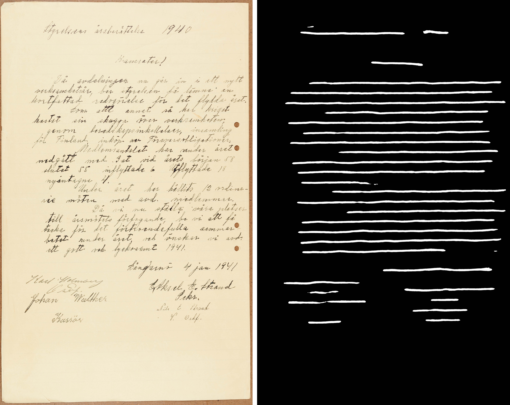

04 / University team project
Swedish handwritten text recognition
A layout-to-transcription workflow for historical Swedish manuscripts using transfer learning and structured document output.

The project
From handwritten pages to structured text.
A university team project using the Labours Memory dataset of historical Swedish union reports. The workflow combines Laypa for text areas and baselines, Loghi HTR transfer learning for transcription, and PageXML for structured output and reading order.
- 01Detect layoutLocate text regions and baselines with Laypa.
- 02Recognize textSegment lines and transcribe using Loghi HTR and transfer learning.
- 03Structure the outputStore Unicode transcriptions in PageXML and reconstruct reading order.
Documented evaluation
Results in their experimental context.
The repository reports 1,725 images, a random 90/10 training–validation split, and results averaged over five tests. Training used TensorFlow 2 on an NVIDIA A100 40 GB GPU on Alvis, with Apptainer containers.
These are historical project results under the documented setup. Character error rate and word error rate measure different aspects of transcription quality.
Explore the evidence